건축기사 (2017-03-05 기출문제)
1과목: 건축계획
1. 종합병원의 건축계획에 관한 설명으로 옳지 않은 것은?
- 간호사의 보행거리는 24m 이내가 되도록 한다.
- 외래진료부는 환자의 이용이 편리하도록 1층 또는 2층 이하에 둔다.
- 일반적으로 병원건축의 시설규모는 입원환자의 병상수에 의해 결정된다.
- 병동배치방식 중 분관식(pavilion type)은 동선이 짧게 되는 이점이 있다.
(정답률: 88%)

2. 호텔의 퍼블릭 스페이스(public space) 계획에 관한 설명을 옳지 않은 것은?
- 로비는 개방성과 다른 공간과의 연계성이 중요하다.
- 프론트 데스크 후방에 프론트 오피스를 연속시킨다.
- 주식당은 외래객이 편리하게 이용할 수 있도록 출입구를 별도로 설치한다.
- 프론트 오피스는 기계화된 설비보다는 많은 사람을 고용함으로서 고객의 편의와 능률을 높여야 한다.
(정답률: 85%)
3. 건축계획단계에서 조사방법에 관한 설명으로 옳지 않은 것은?
- 설문조사를 통하여 생활과 공간간의 대응관계를 규명하는 것은 생활활동 행위의 관찰에 해당된다.
- 주거단지에서 어린이들의 행동특성을 조사하기 위해서는 생활행동 행위 관찰 방식이 일반적으로 적절하다.
- 이용 상황이 명확하게 기록되어 있는 시설의 자료 등을 활용하는 것은 기존자료를 통한 조사에 해당된다.
- 건물의 이용자를 대상으로 설문을 작성하여 조사하는 방식은 생활과 공간의 대응관계 분석에 유효하다.
(정답률: 83%)
4. 전통적인 주택의 골목길을 적층(積層) 주택인 아파트에 구현하고자 했던 설계어휘는?
- 진입광장
- 공중가로
- eco-bridge
- 데크식 주차장
(정답률: 80%)
5. 다음 중 공공 도서관에서 능률적인 작업용량을 고려할 경우, 200000권의 책을 수정하는 서고의 바닥면적으로 가장 적당한 것은?
- 300m2
- 500m2
- 600m2
- 1000m2
(정답률: 86%)
6. 주택 부엌의 작업 삼각형(work triangle)에 관한 설명으로 옳지 않은 것은?
- 3변의 길이 합은 7~8m 정도가 기능적이다.
- 삼각형의 한 변의 길이는 1.8m 이하가 바람직하다.
- 냉장고, 개수대, 레인지의 중간 지점을 연결한 삼각형이다.
- 삼각형의 한 변 길이가 너무 길어지면 동선이 길어지므로 기능상 좋지 않다.
(정답률: 76%)
7. 미술관의 연속순로 형식에 관한 설명으로 옳은 것은?
- 각 실을 필요시에는 자유로이 독립적으로 폐쇄할 수 있다.
- 평면적인 형식으로 2, 3개 층의 입체적인 방법은 불가능하다.
- 많은 실을 순서별로 통하여야 하는 불편이 있으나 공간절약의 이점이 있다.
- 중심부에 하나의 큰 홀을 두고 그 주위에 각 전시실을 배치하여 자유로이 출입하는 형식이다.
(정답률: 86%)
8. 공장건축에 관한 설명으로 옳은 것은?
- 계획 시부터 장래증축을 고려하는 것이 필요하며 평면형은 가능한 요철이 많은 것이 유리하다.
- 재료반입과 제품반출 동선은 동일하게 하고 물품 동선과 사람 동선은 별도로 하는 것이 바람직하다.
- 외부인 동선과 작업원 동선은 동일하게 하고, 견학자는 생산과 교차하지 않는 동선을 확보하도록 한다.
- 자연환기방식의 경우 환기방법은 채광형식과 관련하여 건물형태를 결정하는 매우 중요한 요소가 된다.
(정답률: 76%)
9. 현존하는 우리나라 목조건축물 중 가장 오래된 것은?
- 봉정사 극락전
- 법주사 팔상전
- 부석사 무량수전
- 화엄사 보광대전
(정답률: 78%)
10. 학교운영방식 중 교과교실형에 관한 설명으로 옳지 않은 것은?
- 교실의 순수율이 높다.
- 학생들의 동선계획에 많은 고려가 필요하다.
- 시간표 짜기와 담당교사 수 맞추기가 용이하다.
- 학생 소지품을 두는 곳을 별도로 만들 필요가 있다.
(정답률: 80%)
11. 극장의 평면형 중 애리나(arena)형에 관한 설명으로 옳은 것은?
- picture frame stage 라고도 불리운다.
- 무대의 배경을 만들지 않으므로 경제적이다.
- 연기자가 한 쪽 방향으로만 관객을 대하게 된다.
- 투시도법을 무대공간에 응용함으로써 하나의 구상화와 같은 느낌이 들게 한다.
(정답률: 86%)
12. 래드번(Radburn) 계획의 5가지 기본원리로 옳지 않은 것은?
- 기능에 따른 4가지 종류의 도로 구분
- 자동차 통과도로 배제를 위한 슈퍼블록 구성
- 보도망 형성 및 보도와 차도의 평면적 분리
- 주택단지 어디로나 통할 수 있는 공동 오픈 스페이스 조성
(정답률: 65%)
13. 백화점 매장의 배치 유형에 관한 설명으로 옳지 않은 것은?
- 직각형 배치는 매장 면적의 이용률을 최대로 확보할 수 있다.
- 직각형 배치는 고객의 통행량에 따라 통로 폭을 조절하기 용이하다.
- 경사형 배치는 많은 고객이 매장공간의 코너까지 접근하기 용이한 유형이다.
- 경사형 배치는 Main 통로를 직각 배치하며, Sub 통로를 45° 정도 경사지게 배치하는 유형이다.
(정답률: 72%)
14. 바실리카식 교회당의 구성에 속하지 않는 것은?
- 아일
- 파일론
- 트란셉트
- 나르텍스
(정답률: 67%)
15. 다음 설명에 알맞은 사무소 건축의 코어 유형은?
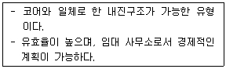
- 편심형
- 독립형
- 분리형
- 중심형
(정답률: 83%)
16. 서양 건축양식의 역사적인 순서가 옳게 배열된 것은?
- 로마 → 로마네스크 → 고딕 → 르네상스 → 바로크
- 로마 → 고딕 → 로마네스크 → 르네상스 → 바로크
- 로마 → 로마네스크 → 고딕 → 바로크 → 르네상스
- 로마 → 고딕 → 로마네스크 → 바로크 → 르네상스
(정답률: 77%)
17. 사무소 건축에서 오피스 랜드스케이핑에 관한 설명으로 옳지 않은 것은?
- 대형가구 등 소리를 반향시키는 기재의 사용이 어렵다.
- 작업장의 집단을 자유롭게 그루핑하여 불규칙 한 평면을 유도한다.
- 변화하는 작업의 패턴에 따라 조절이 가능하며 신속하고 경제적으로 대처할 수 있다.
- 개실시스템의 한 형식으로 배치를 의사전달과 작업흐름의 실제적 패턴에 기초를 둔다.
(정답률: 72%)
18. 다음 설명에 알맞은 도서관의 자료 출납시스템 유형은?
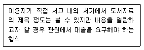
- 폐가식
- 반개가식
- 자유개가식
- 안전개가식
(정답률: 77%)
19. 은행의 건축계획에 관한 설명으로 옳지 않은 것은?
- 고객이 지나는 동선은 되도록 짧게 한다.
- 직원과 고객의 출입구는 따로 설치하는 것이 좋다.
- 규모가 큰 건물에 은행을 계획하는 경우, 고객 출입구는 최소 2개소 이상 설치하여야 한다.
- 일반적으로 출입문은 안여닫이로 하며, 전실을 둘 경우에 바깥문은 밖여닫이 또는 자재문으로 하기도 한다.
(정답률: 85%)
20. 자연형 테라스 하우스에 관한 설명으로 옳지 않은 것은?
- 각 세대마다 전용의 정원을 가질 수 있다.
- 하향식이나 상향식 모두 스플릿 레벨이 가능하다.
- 하향식의 경우 각 세대의 규모를 동일하게 할 수 없다.
- 일반적으로 후면에 창을 설치할 수 없으므로 각 세대 깊이가 너무 깊지 않도록 한다.
(정답률: 70%)
2과목: 건축시공
21. 아래 공종 중 건설현장의 공사비 절감을 위해 집중분석해야하는 공종이 아닌 것은?
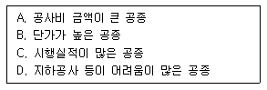
- A
- B
- C
- D
(정답률: 79%)
22. 건설공사에 사용되는 시방서에 관한 설명으로 옳지 않은 것은?
- 시방서는 계약서류에 포함되지 않는다.
- 시방서는 설계도서에 포함된다.
- 시방서에는 공법의 일반사항, 유의사항 등이 기재된다.
- 시방서에 재료 메이커를 지정하지 않아도 좋다.
(정답률: 72%)
23. 면적이 클 때에는 스틸바(steel bar)만으로는 부족하며, 또한 여닫을 때의 진동으로 유리가 파손될 우려가 있으므로 이것을 보강하는 외관을 꾸미기 위하여 강판을 중공형으로 접어 가로 또는 세로로 대는 것을 무엇이라 하는가?
- mullion
- ventilator
- gallery
- pivot
(정답률: 80%)
24. 목재의 무늬나 바탕의 재질을 잘 보이게 하는 도장 방법은?
- 유성페인트 도장
- 에나멀페인트 도장
- 합성수지 페인트 도장
- 클리어 래커 도장
(정답률: 82%)
25. 철근 콘크리트 건축물이 6m×10m 평면에 높이가 4m일 때 동바리 소요량은 몇 공 m3가 되는가?
- 216
- 228
- 240
- 264
(정답률: 59%)
26. 클라이밍 폼의 특징에 대한 설명으로 옳지 않은 것은?
- 고소 작업시 안전성이 높다.
- 거푸집 해체시 콘크리트에 미치는 충격이 적다.
- 초기투자비가 적은 편이다.
- 비계설치가 불필요하다.
(정답률: 79%)
27. 멤브레인 방수에 속하지 않는 방수공법은?
- 시멘트 액체방수
- 합성고분자 시트방수
- 도막방수
- 시트 도막 복합방수
(정답률: 72%)
28. 수밀콘크리트의 물결합재비 기준으로 옳은 것은? (단, 건축공사표준시방서 기준)
- 40% 이하
- 45% 이하
- 50% 이하
- 55% 이하
(정답률: 69%)
29. 금속재료의 종류와 특성에 관한 설명으로 옳지 않은 것은?
- 구조용 특수강이란 강의 탄소량을 0.5% 이하로 하고 니켈, 망간, 규소, 크롬, 몰리브덴 등의 금속원소 1~2 종을 약 5% 이하로 첨가한 것을 말한다.
- 스테인리스강은 공기 및 수중에서 잘 부식되지 않는 강을 말하며, 일반적으로 전기저항이 작고 열전도율이 높으며 경도에 비해 가공성이 우수하다.
- 내후성강은 대기중에서의 내식성을 보통강보다 2~6배 증대시키면서 보통강과 동등 이상의 재질, 가공성, 용접성 등을 갖게 한 강재이다.
- TMCP강재는 탄소당량이 낮음에도 불구하고 용접성을 개선하여 용접성이 우수하며, 강재의 두께가 증가하더라도 항복강도의 저하가 없도록 한 것이다.
(정답률: 54%)
30. 콘크리트의 블리딩에 관한 설명으로 옳지 않은 것은?
- 콘크리트 타설 후 비교적 가벼운 물이나 미세한 물질 등이 상승하는 현상을 의미한다.
- 콘크리트의 물시멘트비가 클수록 블리딩량은 증대한다.
- 콘크리트의 컨시스턴시가 클수록 블리딩량은 증대한다.
- 단위시멘트량이 많을수록 블리딩량은 크다.
(정답률: 70%)
31. 다음 시멘트 중 시멘트 분말의 비표면적이 가장 큰 것은?
- 보통 포틀랜드 시멘트
- 중용열 포틀랜드 시멘트
- 조강 포틀랜드 시멘트
- 백색 포틀랜드 시멘트
(정답률: 74%)
32. 합성고무와 열가소성수지를 사용하여 1겹으로 방수효과를 내는 공법은?
- 도막방수
- 시트방수
- 아스팔트방수
- 표면도포방수
(정답률: 76%)
33. 공동도급방식(Joint Venture)에 관한 설명으로 옳은 것은?
- 2명 이상의 수급자가 어느 특정공사에 대하여 협동으로 공사계약을 체결하는 방식이다.
- 발주자, 설계자, 공사관리자의 세 전문집단에 의하여 공사를 수행하는 방식이다.
- 발주자와 수급자가 상호신뢰를 바탕으로 팀을 구성하여 공동으로 공사를 수행하는 방식이다.
- 공사수행방식에 따라 설계/시공(D/B)방식과 설계/관리(D/M)방식으로 구분한다.
(정답률: 83%)
34. 시험말뚝박기에서 다음 항목 중 말뚝의 허용지지력 산출에 거의 영향을 주지 않는 것은?
- 추의 낙하높이
- 말뚝의 길이
- 말뚝의 최종관입량
- 추의 무게
(정답률: 78%)
35. 콘크리트 타설 후 부재가 건조수축에 대하여 내·외부의 구속을 받지 않도록 일정폭을 두어 어느 정도 양생한 후 남겨둔 부분을 콘크리트로 채워 처리하는 조인트는?
- Construction Joint
- Delay Joint
- Cold Joint
- Expansion Joint
(정답률: 70%)
36. 유리섬유(glass fiber)에 관한 설명으로 옳지 않은 것은?
- 단위면적에 따른 인장강도는 다르고, 가는 섬유일수록 인장강도는 크다.
- 탄성이 적고 전기절연성이 크다.
- 내화성, 단열성, 내수성이 좋다.
- 경량이면서 굴곡에 강하다.
(정답률: 70%)
37. 지하연속벽(slurry wall)에 관한 설명으로 옳지 않은 것은?
- 차수성이 우수하다.
- 비교적 지반조건에 좌우되지 않는다.
- 소음·진동이 적고, 벽체의 강성이 높다.
- 공사비가 타공법에 비하여 저렴하고 공기가 단축된다.
(정답률: 70%)
38. 네트워크 공정표에서 작업의 상호관계만을 도시하기 위하여 사용하는 화살선을 무엇이라 하는가?
- event
- dummy
- activity
- critical path
(정답률: 77%)
39. 고강도콘크리트공사에 사용되는 굵은 골재에 대한 품질기준으로 옳지 않은 것은? (단, 건축공사표준시방서 기준)
- 절대건조밀도 : 2.5g/cm3 이상
- 흡수율：3.0% 이하
- 점토량：0.25% 이하
- 씻기시험에 의한 손실량：1.0% 이하
(정답률: 57%)
40. 건축공사의 공사원가 계산방법으로 옳지 않은 것은?
- 재료비＝재료량×단위당 가격
- 경비＝소요(소비)량×단위당 가격
- 고용보험료＝재료비×고용보험요율(%)
- 일반관리비＝공사원가×일반관리비율(%)
(정답률: 76%)
3과목: 건축구조
41. 그림에서 파단선 a－1－2－3－d의 인장재의 순단 면적은? (단, 판두께는 10mm, 볼트구멍지름은 22mm)
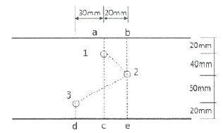
- 690mm2
- 790mm2
- 890mm2
- 990mm2
(정답률: 59%)
42. 강도설계법에서 깊은 보는 순경간이 부재 깊이의 몇 배 이하인 부재인가?
- 2배
- 3배
- 4배
- 5배
(정답률: 56%)
43. 다음과 같은 조건에서 철근콘크리트 보의 인장철근의 최대 허용 배근 간격은 얼마인가? (단, 철근은 보의 인장부에만 배근하고 피복두께는 40mm이다.)
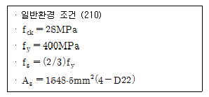
- 106.7mm
- 163.5mm
- 195.3mm
- 239.1mm
(정답률: 32%)
44. 다음 그림과 같은 구조물의 판별로 옳은 것은?
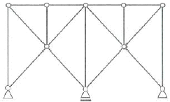
- 불안정
- 정정
- 1차부정정
- 2차부정정
(정답률: 63%)
45. 그림과 같은 구조물에서 AE부재와 EB부재의 전단력의 차이는?
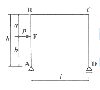
- Pa/l
- Pb/l
- P
- 0
(정답률: 50%)
46. 철골구조의 기둥－보 접합부의 구성요소와 가장 거리가 먼 것은?
- 엔드플레이트(End Plate)
- 다이아프램(Diaphragm)
- 스플릿티(Split Tee)
- 메탈터치(Metal touch)
(정답률: 59%)
47. 탄성계수가 105MPa이고 균일한 단면을 가진 부재에 인장력이 작용하여 10MPa의 인장응력이 발생하엿다. 이 때 부재의 길이가 0.5mm 늘어났다면 부재의 원래의 길이는?
- 2m
- 5m
- 8m
- 10m
(정답률: 67%)
48. 보통중량콘크리트를 사용한 그림과 같은 보의 단면에서 외력에 의해 휨 균열을 일으키는 균열모멘트(Mcr) 값으로 옳은 것은? (단, fck=27MPa, fy=400MPa, 철근은 개략적으로 도시되어있음)(오류 신고가 접수된 문제입니다. 반드시 정답과 해설을 확인하시기 바랍니다.)
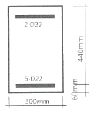
- 29.5kN·m
- 34.7kN·m
- 40.9kN·m
- 52.4kN·m
(정답률: 60%)
49. fck=27MPa, fy=400MPa, d=550mm인 철근콘크리트 단근직사각형 보에서 균형철근비 ρb를 구하면? (단, Es=2.0×105MPa)(관련 규정 개정전 문제로 여기서는 기존 정답인 2번을 누르면 정답 처리됩니다. 자세한 내용은 해설을 참고하세요.)
- 0.0260
- 0.0293
- 0.0325
- 0.0352
(정답률: 58%)
50. 다음 중 내진 1등급 구조물의 허용층간변위로 옳은 것은? (단, hsx는 x층 층고)
- 0.0⑤hsx
- 0.010hsx
- 0.015hsx
- 0.020hsx
(정답률: 67%)
51. 그림과 같은 철골구조에서 K/Kc=0 일 때 기둥의 좌굴길이는? (단. 수평력에 의해 수평변형이 생길 때)
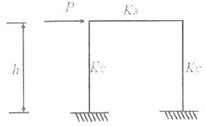
- 0.5h
- 0.7h
- 1.0h
- 2.0h
(정답률: 50%)
52. 그림과 같은 내민보에 집중하중이 작용할 때 A점의 처짐각 θA를 구하면?
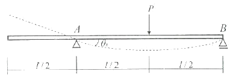
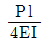
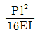
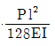
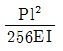
(정답률: 61%)
53. 그림과 같은 사다리꼴 단면형의 도심(圖心)의 위치 y를 나타내는 식은?
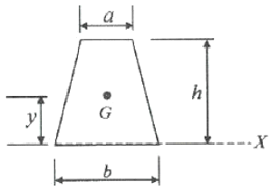
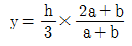
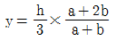
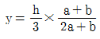
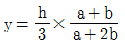
(정답률: 69%)
54. 강구조 용접에서 용접 개시점과 종료점에 용착금속에 결함이 없도록 임시로 부착하는 것은?
- 엔드탭(End tap)
- 오버랩(Overlap)
- 뒷댐재(Backing Strip)
- 언더컷(Under cut)
(정답률: 76%)
55. 표준갈고리를 갖는 인장 이형철근(D13)의 기본정착길이는? (단, D13의 공칭지름 : 12.7mm, fk=27MPa, fy=400MPa, β=1.0, mc=2,300kg/m3)
- 190mm
- 2⑤mm
- 220mm
- 235mm
(정답률: 51%)
56. 다음 그림과 같은 인장재의 순단면적을 구하면? (단, F10T－M20볼트 사용(표준구멍), 판의 두께는 6mm임)
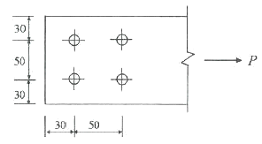
- 296mm22
- 396mm2
- 426mm2
- 536mm2
(정답률: 55%)
57. 다음 중 철골구조의 소성설계와 관계 없는 것은?
- 형상계수(Form factor)
- 소성힌지(Plastic hinge)
- 붕괴기구(Collapse mechanism)
- 잔류응력(Residual stress)
(정답률: 53%)
58. 압축이형철근(D19)의 기본정착길이를 구하면? (단, D19의 단면적 : 287mm2, fck=21MPa, fy=400MPa)
- 674mm
- 570mm
- 482mm
- 415mm
(정답률: 52%)
59. 그림과 같은 하중을 받는 단순보에서 E점의 전단력값은?
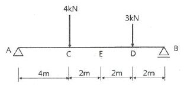
- －1kN
- －2kN
- －3kN
- －4kN
(정답률: 56%)
60. KBC2016에 따른 말뚝재료별 구조세칙에 관한 내용으로 옳지 않은 것은?
- 현장타설콘크리트말뚝을 배치할 때 그 중심간격은 말뚝머리지름의 1.5배 이상 또한 말뚝머리지름에 500mm를 더한 값 이상으로 한다.
- 나무말뚝은 갈라짐 등의 흠이 없는 생통나무 껍질을 벗긴 것으로 말뚝머리에서 끝마구리까지 대체로 균일하게 지름이 변화하고 끝마구리의 지름이 120mm 이상의 것을 사용한다.
- 기성 콘크리트 말뚝을 타설할 때 그 중심간격은 말뚝머리지름의 2.5배 이상 또한 750mm 이상으로 한다.
- 매입말뚝을 배치할 때 그 중심간격은 말뚝머리지름의 2배 이상으로 한다.
(정답률: 58%)
4과목: 건축설비
61. 가스사용시설에서 가스계량기의 설치에 관한 설명으로 옳지 않은 것은?
- 전기접속기와의 거리가 최소 30cm 이상이 되도록 한다.
- 전기점멸기와의 거리가 최소 60cm 이상이 되도록 한다.
- 전기개폐기와의 거리가 최소 60cm 이상이 되도록 한다.
- 전기계량기와의 거리가 최소 60cm 이상이 되도록 한다.
(정답률: 71%)
62. 이중덕트방식에 관한 설명으로 옳은 것은?
- 부하감소에 따라 송풍량이 감소된다.
- 부하변동에 따른 적응속도가 느리다.
- 혼합손실로 인한 에너지 소비량이 크다.
- 부하특성이 다른 여러 실에 적용하기 곤란하다.
(정답률: 64%)
63. 세정밸브식 대변기의 최소 급수관경은?
- 15A
- 20A
- 25A
- 32A
(정답률: 62%)
64. 에스컬레이터의 좌우에 설치되어 있으며, 스텝을 주행시키는 역할을 하는 것은?
- 스텝체인
- 핸드레일
- 스커트가드
- 가이드레일
(정답률: 69%)
65. 연결송수관설비의 방수구에 관한 설명으로 옳지 않은 것은?
- 방수구의 위치표시는 표시등 또는 축광식표지로 한다.
- 호스접결구는 바닥으로부터 0.5m 이상 1m 이하의 위치에 설치한다.
- 개폐기능을 가진 것으로 설치하여야 하며, 평상시 닫힌 상태를 유지하도록 한다.
- 연결송수관설비의 전용방수구 또는 옥내소화전 방수구로서 구경 50mm의 것으로 설치한다.
(정답률: 60%)
66. 변전실의 위치에 관한 설명으로 옳지 않은 것은?
- 습기와 먼지가 적은 곳일 것
- 전기 기기의 반출입이 용이한 곳일 것
- 가능한 한 부하의 중심에서 먼 곳일 것
- 외부로부터 전원의 인입이 쉬운 곳일 것
(정답률: 80%)
67. 압력수조 급수방식에 관한 설명으로 옳지 않은 것은?
- 정전 시 급수가 곤란하다.
- 고가수조가 필요 없어 미관상 좋다.
- 고가수조방식에 비해 급수압의 변동이 크다.
- 고가수조방식에 비해 수조의 설치위치에 제한이 많다.
(정답률: 67%)
68. 어느 점광원과 1m 떨어진 곳의 수평면 조도가 200[lx]일 때, 이 광원에서 2m 떨어진 곳의 수평면 조도는?
- 25[lx]
- 50[lx]
- 100[lx]
- 200[lx]
(정답률: 81%)
69. 공기조화설비의 에너지 절약방법 중 배열을 회수하여 이용하는 방식은?
- 변유량 방식
- 외기냉방 방식
- 전열교환 방식
- 전력수요제어 방식
(정답률: 77%)
70. 냉각탑에 대한 설명으로 옳은 것은?
- 고압의 액체냉매를 증발시켜 냉동효과를 얻게하는 설비이다.
- 증발기에서 나온 수증기를 냉각시켜 물이 되도록 하는 설비이다.
- 대기 중에서 기체냉매를 냉각시켜 액체냉매로 응축하기 위한 설비이다.
- 냉매를 응축시키는데 사용된 냉각수를 재사용 하기 위하여 냉각시키는 설비이다.
(정답률: 79%)
71. 220/380V 전원을 공급하는 빌딩 및 공장의 전등 및 동력용 간선으로 가장 많이 사용되는 배선방식은?
- 단상 2선식
- 단상 3선식
- 3상 3선식
- 3상 4선식
(정답률: 75%)
72. 환기에 관한 설명으로 옳지 않은 것은?
- 외부풍속이 커지면 환기량은 많아진다.
- 실내외의 온도차가 크면 환기량은 작아진다.
- 중성대란 중력환기에서 실내외의 압력이 같아지는 위치이다.
- 자연환기량은 중성대로부터 공기유입구 또는 유출구까지의 높이가 클수록 많아진다.
(정답률: 80%)
73. 수량 20m3/h를 양수하는데 필요한 펌프의 구경은? (단, 양수펌프 내 유속은 2m/s로 한다.)
- 30mm
- 40mm
- 50mm
- 60mm
(정답률: 41%)
74. 양수량이 1m3/min, 전양정이 50m인 펌프에서 회전수를 1.2배 증가시켰을 때 양수량은?
- 1.2배 증가
- 1.44배 증가
- 1.73배 증가
- 2.4배 증가
(정답률: 70%)
75. 바닥복사난방에 관한 설명으로 옳지 않은 것은?
- 천장이 높은 실의 난방에는 사용할 수 없다.
- 실내의 온도분포가 비교적 균등하고 쾌감도가 높다.
- 예열시간이 길어 일시적인 난방에는 바람직하지 않다.
- 방열기를 설치하지 않아 실내 바닥면의 이용도가 높다.
(정답률: 71%)
76. 건구 온도가 25°C인 실내공기 8000m3/h와 건구 온도 31°C인 외부공기 2000m3/h를 단열혼합하였을 때 혼합공기의 건구온도는?
- 24.8℃
- 26.2℃
- 27.5℃
- 29.8℃
(정답률: 76%)
77. 다음 중 상대습도(R.H) 100%에서 그 값이 같지 않은 온도는?
- 건구온도
- 효과온도
- 습구온도
- 노점온도
(정답률: 47%)
78. 다음 설명에 알맞은 접지의 종류는?
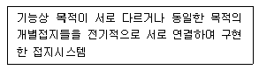
- 단독접지
- 공통접지
- 통합접지
- 종별접지
(정답률: 72%)
79. 자동화재탐지설비의 감지기 중 감지기 주위의 온도가 일정한 온도 이상이 되었을 때 작동하는 것은?
- 차동식 감지기
- 정온식 감지기
- 광전식 감지기
- 이온화식 감지기
(정답률: 84%)
80. 급탕 배관의 신축이음의 종류에 속하지 않는 것은?
- 루프형
- 칼라형
- 슬리브형
- 벨로즈형
(정답률: 60%)
5과목: 건축법규
81. 다음 중 특별시나 광역시에 건축할 경우, 특별시장이나 광역시장의 허가를 받아야 하는 대상 건축물은?
- 층수가 20층인 호텔
- 층수가 25층인 사무소
- 연면적이 150000m2인 공장
- 연면적이 50000m2인 공동주택
(정답률: 56%)
82. 용도별 건축물의 종류가 옳지 않은 것은?
- 판매시설：소매시장
- 의료시설：치과병원
- 문화 및 집회시설：수족관
- 제1종 근린생활시설：동물병원
(정답률: 67%)
83. 다음의 대지와 도로의 관계에 관한 기준 내용 중 ( )안에 알맞은 것은?
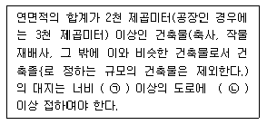
- ㉠ 4m, ㉡ 2m
- ㉠ 6m, ㉡ 4m
- ㉠ 8m, ㉡ 6m
- ㉠ 8m, ㉡ 4m
(정답률: 78%)
84. 건축법령상 다중이용건축물에 속하지 않는 것은?
- 층수가 16층인 판매시설
- 층수가 20층인 관광숙박시설
- 종합병원으로 쓰는 바닥면적의 합계가 3000m2인 건축물
- 종교시설로 쓰는 바닥면적의 합계가 5000m2인 건축물
(정답률: 68%)
85. 건축법령상 다음과 같은 건축물의 높이는? (단, 가로구역에서의 건축물의 높이 제한과 관련된 건축물의 높이)
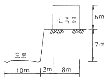
- 6m
- 9m
- 9.5m
- 13.5m
(정답률: 74%)
86. 건축물의 관람석 또는 집회실로부터 바깥쪽으로의 출구로 쓰이는 문을 안여닫이로 하여서는 안되는 건축물은?
- 위락시설
- 수련시설
- 문화 및 집회시설 중 전시장
- 문화 및 집회시설 중 동·식물원
(정답률: 49%)
87. 특별피난계단의 구조에 관한 기준 내용으로 옳지 않은 것은?
- 계단은 내화구조로 하되, 피난층 또는 지상까지 직접 연결되도록 한다.
- 계단실 및 부속실의 실내에 접하는 부분의 마감은 불연재료로 한다.
- 출입구의 유효너비는 0.9m 이상으로 하고 피난의 방향으로 열 수 있도록 한다.
- 건축물의 내부에서 노대 또는 부속실로 통하는 출입구에는 갑종방화문 또는 을종방화문을 설치하고, 노대 또는 부속실로부터 계단실로 통하는 출입구에는 갑종방화문을 설치하도록 한다.
(정답률: 72%)
88. 주차전용건축물이란 건축물의 연면적 중 주차장으로 사용되는 부분의 비율이 최소 얼마 이상인 건축물을 말하는가? (단, 주차장 외의 용도가 자동차관련시설인 경우)
- 70%
- 80%
- 90%
- 95%
(정답률: 70%)
89. 공동주택의 난방설비를 개별난방방식으로 하는 경우에 관한 기준 내용으로 옳지 않은 것은?
- 보일러의 연도는 내화구조로서 공동연도로 설치할 것
- 보일러실 윗부분에는 그 면적이 최소 1.0m2 이상인 환기창을 설치할 것
- 기름보일러를 설치하는 경우에는 기름저장소를 보일러실외의 다른 곳에 설치할 것
- 보일러를 설치하는 곳과 거실사이의 경계벽은 출입구를 제외하고는 내화구조의 벽으로 구획할 것
(정답률: 64%)
90. 국토의 계획 및 이용에 관한 법령에 따른 기반시설 중 자동차 정류장의 세분에 속하지 않는 것은?
- 고속터미널
- 화물터미널
- 공영차고지
- 여객자동차터미널
(정답률: 62%)
91. 건축법령에 따른 리모델링이 쉬운 고조에 속하지 않는 것은?
- 구조체가 철골구조로 구성되어 있을 것
- 구조체에서 건축설비, 내부 마감재료 및 외부 마감재료를 분리할 수 있을 것
- 개별 세대 안에서 구획된 실의 크기, 개수 또는 위치 등을 변경할 수 있을 것
- 각 세대는 인접한 세대와 수직 또는 수평방향으로 통합하거나 분할할 수 있을 것
(정답률: 77%)
92. 건축물의 필로티 부분을 건축법령상의 바닥면적에 산입하는 경우에 속하는 것은?
- 공중의 통행에 전용되는 경우
- 차량의 주차에 전용되는 경우
- 업무시설의 휴식공간으로 전용되는 경우
- 공동주택의 놀이공간으로 전용되는 경우
(정답률: 67%)
93. 지하식 또는 건축물식 노외주차장에서 경사로가 직선형인 경우, 경사로의 차로 너비는 최소 얼마 이상으로 하여야 하는가? (단, 2차로인 경우)
- 5m
- 6m
- 7m
- 8m
(정답률: 75%)
94. 주차대수가 300대인 기계식주차장의 진입로 또는 전면공지와 접하는 장소에 확보하여야 하는 정류장의 최소 규모는?
- 12대
- 13대
- 14대
- 15대
(정답률: 43%)
95. 다음은 도시·군관리계획도서 중 계획도에 관한 기준 내용이다. ( )안에 알맞은 것은? (단, 모든 축척의 지형도가 간행되어 있는 경우)
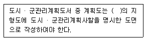
- 축척 100분의 1또는 축척 500분의 1
- 축척 500분의 1또는 축척 2천분의 1
- 축척 1천분의 1또는 축척 5천분의 1
- 축척 3천분의 1또는 축척 1만분의 1
(정답률: 66%)
96. 제2종 일반주거지역안에서 건축할 수 있는 건축물에 속하지 않는 것은?
- 아파트
- 노유자시설
- 문화 및 집회시설 중 전시장
- 문화 및 집회시설 중 관람장
(정답률: 45%)
97. 각 층의 거실면적이 1000m2이며, 층수가 15층인 다음 건축물 중 설치하여야 하는 승용승강기의 최소 대수가 가장 많은 것은? (단, 8인승 승용승강기인 경우)
- 위락시설
- 업무시설
- 교육연구시설
- 문화 및 집회시설 중 집회장
(정답률: 56%)
98. 대형건축물의 건축허가 사전승인신청서 제출도서 중 설계설명서에 표시하여야 할 사항에 속하지 않는 것은?
- 시공방법
- 동선계획
- 개략공정계획
- 각부 구조계획
(정답률: 66%)
99. 지구단위계획중 관계 행정기관의 장과의 협의, 국토교통부장관과의 협의 및 중앙도시계획위원회·지방도시계획위원회 또는 공동위원회의 심의를 거치지 아니하고 변경할 수 있는 사항에 관한 기준 내용으로 옳은 것은?
- 건축선의 2m 이내의 변경인 경우
- 획지면적의 30% 이내의 변경인 경우
- 가구면적의 20% 이내의 변경인 경우
- 건축물 높이의 30% 이내의 변경인 경우
(정답률: 57%)
100. 건축법령상 고층건축물의 정의로 옳은 것은?
- 층수가 30층 이상이거나 높이가 90m 이상인 건축물
- 층수가 30층 이상이거나 높이가 120m 이상인 건축물
- 층수가 50층 이상이거나 높이가 150m 이상인 건축물
- 층수가 50층 이상이거나 높이가 200m 이상인 건축물
(정답률: 80%)
분관식(pavilion type)은 중앙 복도를 따라 병동을 배치하는 방식이 아니라, 중앙에 공간을 두고 그 주위에 병동을 배치하는 방식이다. 이 방식은 각 병동이 독립적인 출입구와 엘리베이터를 가지고 있어 동선이 짧아지는 이점이 있다. 따라서 "병동배치방식 중 분관식(pavilion type)은 동선이 짧게 되는 이점이 있다."가 옳은 설명이다.